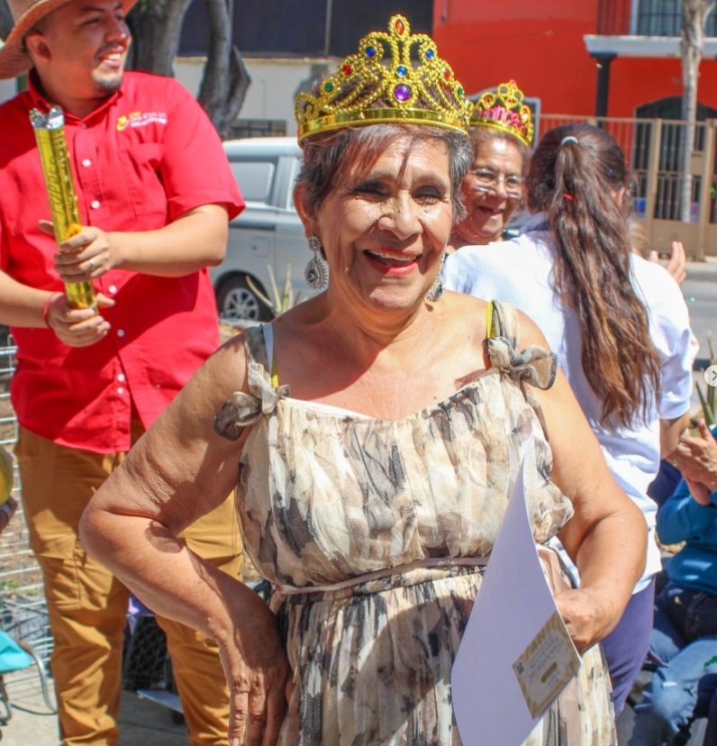

Quiénes somos
Somos una organización social en Guadalajara dedicada a mejorar la calidad de vida de las personas adultas mayores.
Misión
Mejorar la calidad de vida de los adultos mayores en nuestra comunidad, brindando atención integral y apoyo emocional, servicios de enfermería a domicilio, asistencia alimentaria, programas de entretenimiento, auxilio en el hogar y conexión con especialistas de salud.
Visión
Ser reconocidos como una organización líder en el cuidado y apoyo a los adultos mayores, brindando servicios integrales que mejoren su bienestar físico, emocional y social, adaptándonos a las necesidades cambiantes de nuestra sociedad.
Principios que nos guían
- Salud con Sentido: Prevención y atención de enfermería para un envejecimiento activo.
- Nutrición Solidaria: Alianzas con bancos de alimentos para llevar sustento a las familias más vulnerables.
- Dignidad en el Hogar: Brigadas de apoyo domiciliario que transforman el entorno de vida de nuestros adultos mayores.
- Solidaridad, transparencia y compromiso con el bien común.
"No solo cuidamos la salud, tejemos una red de apoyo donde la sociedad se ayuda a sí misma para salir adelante."

Nuestra historia
El Deseo que lo Cambió Todo
La semilla de Residencia Altata AC (mejor conocida como Casa Isis Rico) no se plantó en una oficina, sino en el corazón de un hogar. Isis Rico Bermúdez, tras años de enfrentar la demencia, tuvo un momento extraordinario de lucidez donde expresó su último gran deseo: que su casa se transformara en un refugio para adultos mayores.
En septiembre de 2020, su hija, Yuraida Sandoval Rico, decidió honrar esa memoria, convirtiendo el duelo en acción y la casa familiar en un espacio de esperanza para quienes enfrentan la etapa más vulnerable de la vida.
Resiliencia ante la Adversidad
Nacimos en un momento histórico desafiante. La pandemia de COVID-19 nos obligó a cerrar el formato de asilo en 2021, pero el impacto en la comunidad ya era imparable.
Al ver que las familias seguían buscando apoyo, Yuraida tomó una decisión audaz: reabrir bajo un nuevo modelo de Centro de Día, extendiendo nuestras manos a toda la Zona Metropolitana de Guadalajara para seguir apoyando a los adultos mayores en situación vulnerable.